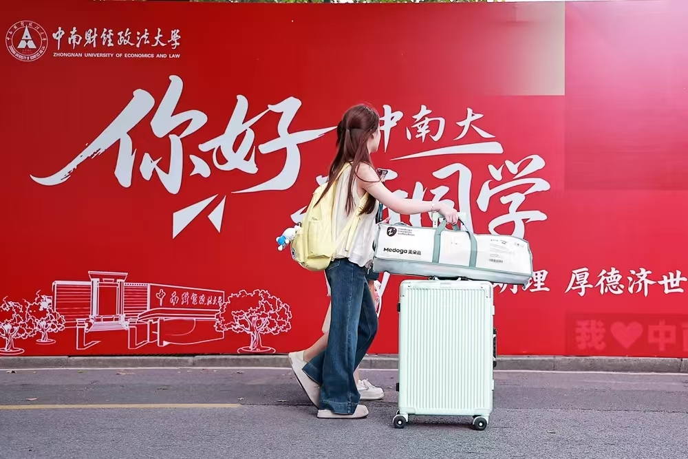
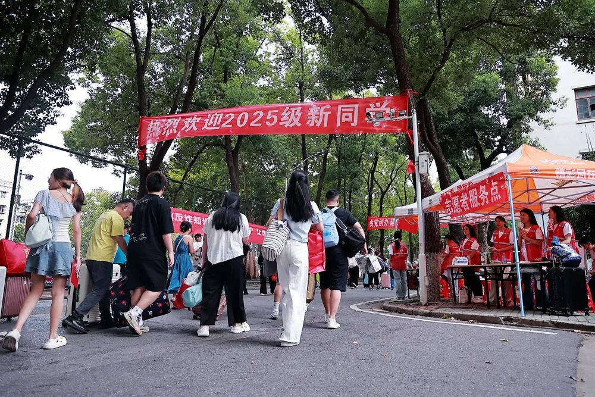
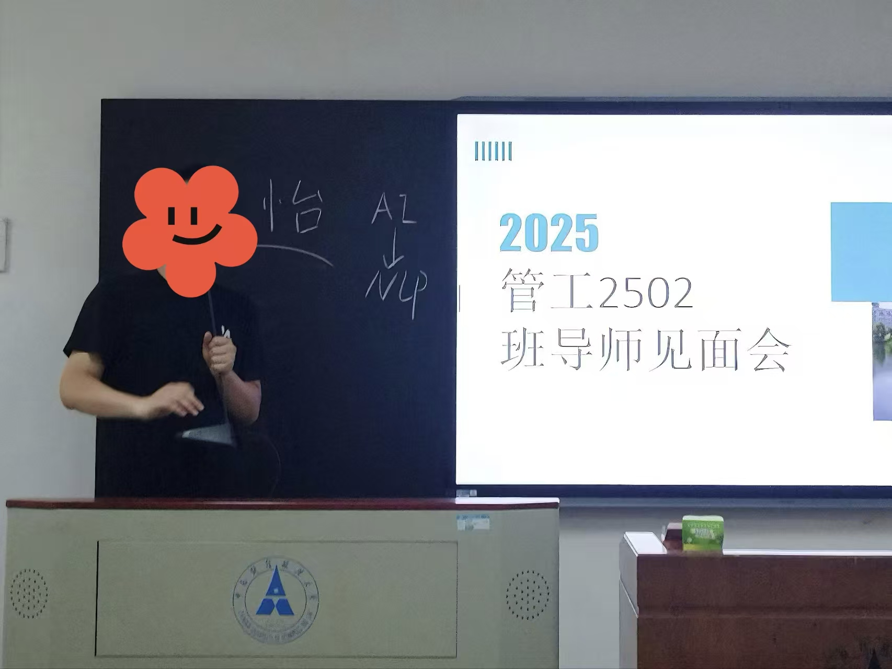
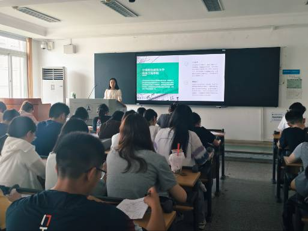
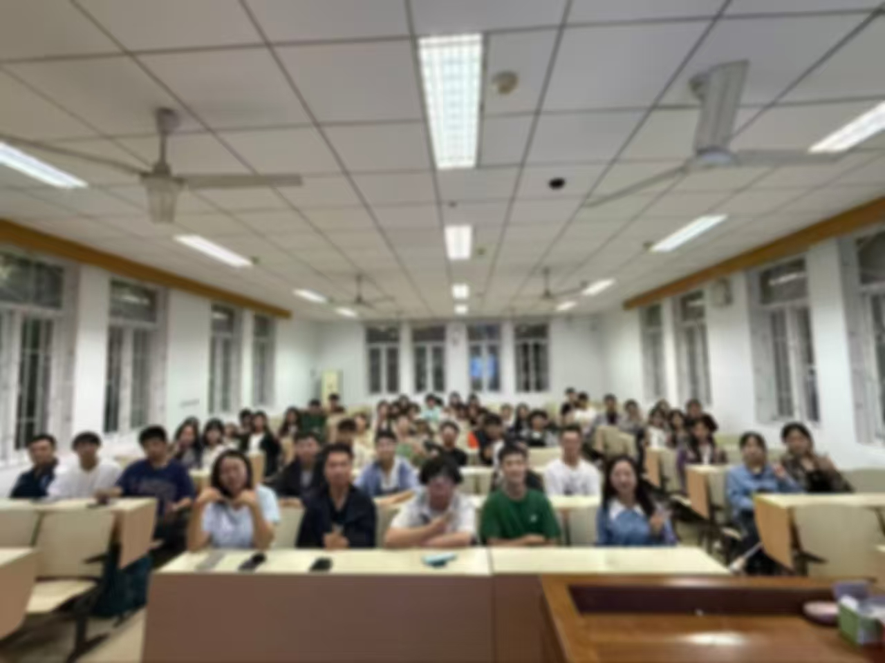
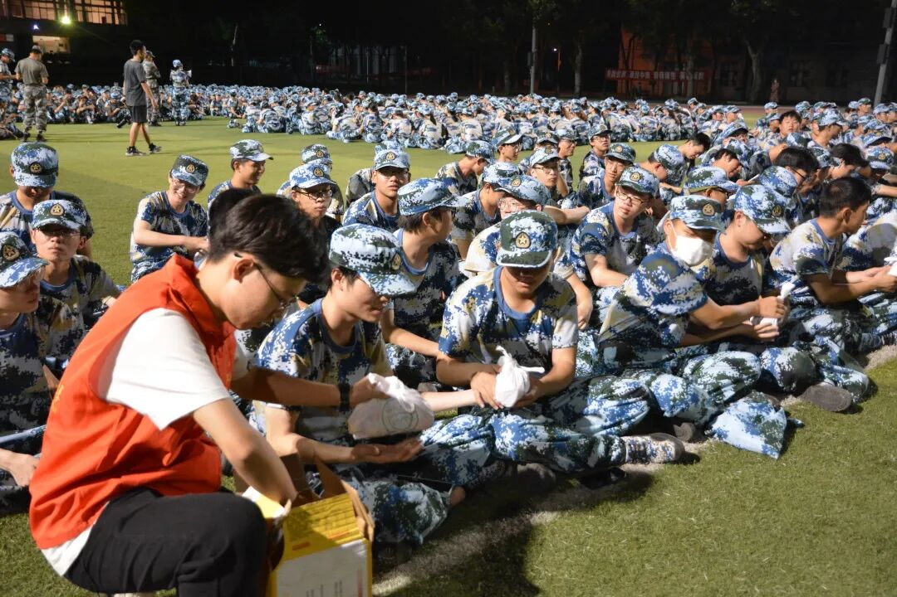
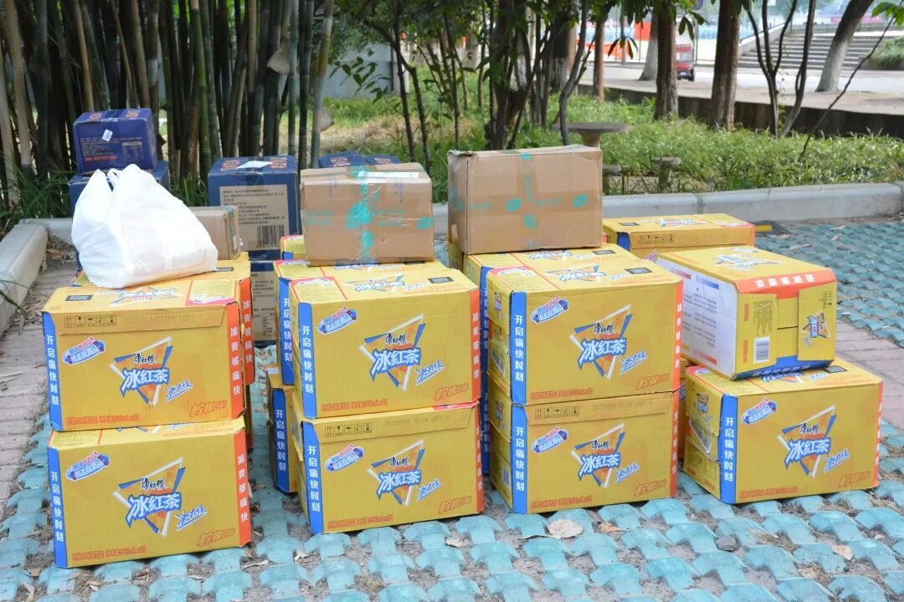
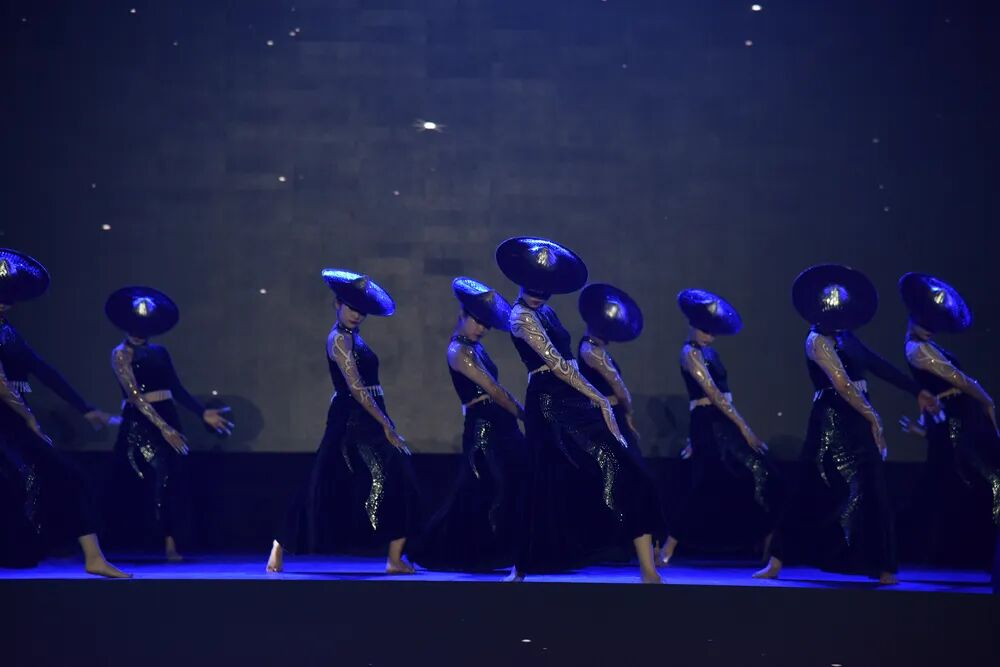
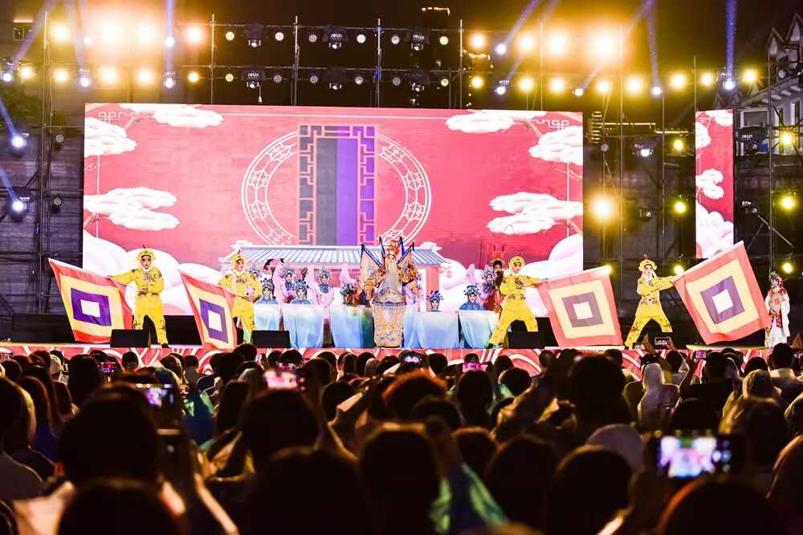

Freshman Assistant
"陪伴80+新生，开启大学新篇章"
管理新生
工作年数
组织活动
陪伴成长的每一个瞬间
参与2025级新生迎新工作，协助新生完成报到流程，帮助搬运行李，引导入住宿舍。 在炎热的夏日里，用热情和耐心迎接每一位新同学，让他们感受到学校的温暖。

📷
📷协助组织新生第一次班会，帮助同学们相互认识，介绍学校规章制度， 解答新生关于学习和生活的各种疑问，建立班级凝聚力。

📷
📷
📷完成新生纸质档案的收集、核验与分类归档，搭建并维护学生档案电子台账， 优化档案管理流程，保障学生信息的准确性、安全性与可追溯性，提升学生管理工作运转效率， 为学院学生工作提质增效提供支撑
全程陪伴新生完成军训任务，协助教官管理班级，关注同学身体状况， 组织休息时的文娱活动，用相机记录下同学们坚毅与青春的美好瞬间。

📷
📷协助策划和组织新生晚会，从节目筛选、彩排到现场执行全程参与。 为新生提供展示才艺的舞台，增进同学间的友谊，营造温馨的班级氛围。

📷
📷承担入党申请学生的谈话组织与记录工作，围绕入党动机、思想认识、 日常表现等核心维度开展深度沟通，形成规范谈话档案，同步做好思想引导与跟踪培养， 协助党组织完成党员发展全流程的政治把关，保障党员发展质量。
成长与收获 / Growth & Harvest
管理近80名新生让我深刻理解了责任的重量。从迎新到军训，从日常管理到活动组织，每一个细节都需要用心对待。这段经历培养了我强烈的责任意识和服务意识。
面对不同性格、不同背景的同学，我学会了如何有效沟通。协调各方资源、处理突发情况、平衡不同需求，这些经历极大地提升了我的沟通协调能力。
在帮助他人的过程中，我也收获了成长。从最初的手忙脚乱到后来的从容应对，从被动执行到主动思考，这段经历让我变得更加成熟和自信。